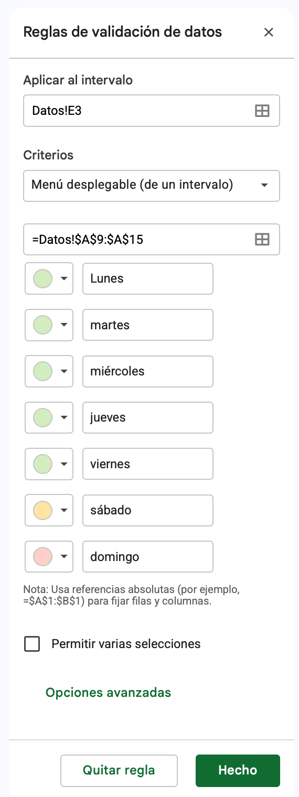

Por qué automatizar decisiones
Tenés una planilla con 300 registros y necesitás escribir "Revisar" o "En orden" al lado de cada uno, según un umbral. ¿Cuánto tardarías en hacerlo a mano, uno por uno? ¿Y si mañana la organización cambia el umbral?
De dónde venimos
En la Clase 08 armaste, para una de cuatro organizaciones, un archivo con la hoja DATOS (ocho registros de junio, con importe_bruto e importe_neto calculados), un panel RESUMEN y un parámetro del negocio alojado en una sola celda y referenciado con $. Ese archivo es el punto de partida de hoy.
💡 Consejo — Si no tenés el archivo a mano
Podés rehacerlo en diez minutos: el dataset completo de las cuatro organizaciones y sus parámetros están en el material de la Clase 08. Y si preferís, trabajá con una tabla propia de al menos ocho filas que tenga la misma estructura —identificador, fecha, un campo de agrupación, una categoría, una cantidad y un valor unitario—; todo lo de hoy funciona igual.
⚠️ Atención
Todo lo de hoy asume que ya podés fijar una referencia con $ sin pensarlo, y que la sintaxis =FUNCIÓN(rango) te sale de memoria. Si todavía dudás, repasá eso antes de seguir: las funciones de esta clase se construyen literalmente arriba de esos conceptos.
De calcular a decidir
Hasta ahora tus planillas calculaban números. Una función lógica hace otra cosa: evalúa una condición y devuelve un resultado distinto según si esa condición se cumple o no. Traslada el "si pasa esto, entonces aquello" a una fórmula que la planilla evalúa fila por fila, sobre miles de filas, en el mismo tiempo que tarda en evaluar una sola.
💡 Consejo
Antes de escribir la fórmula, escribí la regla en español, en una oración con "si": "si el importe supera el umbral, es de alto valor; si no, es estándar". Traducir esa oración a la planilla es después un trámite casi mecánico.
El encargo de esta semana
El panel de la semana pasada funcionó. Ahora llega el pedido siguiente, y es de otro orden: no más números, sino criterios que la planilla aplique sola y una carga que el resto del equipo no pueda romper.
Gracias por el resumen, sirvió. Ahora te pido tres cosas más:
- Que cada registro quede clasificado solo. Con el total no me alcanza: necesito saber cuáles son los importantes, cuáles son normales y cuáles hay que revisar. Y que si cambio el corte, se reclasifique todo sin que nadie toque una fórmula.
- Los subtotales por área: cuánto aporta cada canal / sede / turno / responsable, y cuántos registros tiene cada uno.
- A partir de julio la carga la van a hacer tres personas distintas. Necesito que el archivo no acepte cualquier cosa: que las categorías salgan de una lista y no de lo que a cada uno se le ocurra escribir.
Gracias.
Qué te está pidiendo realmente
| Lo que dice el pedido | Lo que hay que hacer | Herramienta de esta clase |
|---|---|---|
| "Que quede clasificado solo, en tres grupos" | Una regla de decisión con más de dos salidas, evaluada fila por fila | SI anidado |
| "Que si cambio el corte se reclasifique todo" | El umbral fuera de la fórmula, en su propia celda | Referencia absoluta ($) |
| "Cuánto aporta cada área y cuántos registros tiene" | Sumar y contar solo el subconjunto que cumple un criterio | SUMAR.SI, CONTAR.SI |
| "Que el archivo no acepte cualquier cosa" | Restringir la carga desde el origen, no corregir después | Validación de datos por lista |
El umbral de tu organización
Es el mismo que usaste para la regla amarilla de formato condicional en la clase anterior. Ahora, en vez de pintar, va a escribir una categoría.
| Organización | Campo que agrupa | Umbral "alto valor" | Regla completa |
|---|---|---|---|
| 💼 Hotel Bahía Norte | canal | $250.000 | Revisar si la cantidad es 0 · Alto valor si el importe bruto llega al umbral · Estándar en cualquier otro caso |
| 📚 Territorio Abierto | sede | $40.000 | |
| 🔬 Planta piloto Sur | turno | $300.000 | |
| 🎨 Estudio Delta | responsable | $150.000 |
💡 Consejo — Control de resultado
Con el dataset de junio, cualquiera sea tu organización, la clasificación tiene que dar un solo registro en "Revisar" (el que tiene la cantidad en cero) y tres o cuatro en "Alto valor". Si te da otra cosa, el error está en el orden de las condiciones o en el umbral, no en la sintaxis.
La función SI
Sintaxis
- Condición: una comparación que la planilla puede evaluar como verdadera o falsa. Usa los operadores
=,>,<,>=,<=,<>(distinto de). - Valor si verdadero: lo que aparece en la celda cuando la condición se cumple.
- Valor si falso: lo que aparece cuando no se cumple.
Un ejemplo completo:
⚠️ Atención — El texto va entre comillas
Si el resultado que querés mostrar es texto (no un número ni el resultado de otra fórmula), tiene que ir entre comillas dobles: "Aprobado", no Aprobado. Es el error más común al escribir un SI por primera vez — la planilla tira #¿NOMBRE? porque intenta interpretar "Aprobado" como el nombre de una función o de un rango.
Los operadores de comparación
| Operador | Significa | Ejemplo |
|---|---|---|
= | Igual a | B2=100 |
> | Mayor que | B2>6 |
< | Menor que | B2<6 |
>= | Mayor o igual que | B2>=6 |
<= | Menor o igual que | B2<=6 |
<> | Distinto de | B2<>0 |
Un SI de dos ramas
Cinco filas sin contexto, para aislar la mecánica.
- En una hoja aparte, cargá cinco notas:
8,4,6,3,9. - Al lado, con
SI, mostrá "Aprobado" si la nota es mayor o igual a 6, y "Desaprobado" si no. Copiá hacia abajo. - Deberías obtener tres "Aprobado" y dos "Desaprobado". Si te sale
#¿NOMBRE?, faltan las comillas. - Ahora cargá el 6 en una celda aparte y reescribí la fórmula para que compare contra esa celda con referencia absoluta. Cambiala a 7 y confirmá que la columna entera se recalcula sin tocar ninguna fórmula.
El umbral fuera de la fórmula
- Abrí tu archivo y, debajo de la celda del parámetro que ya tenías, agregá una celda nueva: "Umbral alto valor", con el valor de tu organización.
- En la hoja
DATOS, agregá una columnaalto_valorcon unSIde dos ramas:"Sí"si el importe bruto llega o supera ese umbral,"No"si no. El umbral, con referencia absoluta. - Contá a ojo cuántos "Sí" te quedaron y comparalo con las celdas que se pintaron de amarillo en la clase anterior: tienen que ser exactamente las mismas.
- Bajá el umbral a la mitad y confirmá que la columna se recalcula sola. Después devolvelo al valor original.
 Actualizá tu LinkedIn
Actualizá tu LinkedIn
Google Sheets. Cómo la justificás: automatizo decisiones sobre datos con funciones lógicas, parametrizando los umbrales en celdas propias de modo que un cambio de criterio del negocio se aplique a todo el conjunto sin editar fórmulas.
SI anidados
Una condición con dos salidas no alcanza: el pedido habla de tres grupos. Para clasificar en tres o más categorías se anida un SI dentro de otro, en el lugar del "valor si falso".
Clasificar una nota en "Excelente" (9 o más), "Aprobado" (entre 6 y 8) o "Desaprobado" (menos de 6):
La lógica se lee así: "si la nota es 9 o más, Excelente. Si no, evaluá esta otra condición: si es 6 o más, Aprobado. Si tampoco se cumple, Desaprobado."
💡 Consejo — El orden decide el resultado
Escribí primero la condición que corta el grupo más chico o más excepcional, y dejá la última rama sin condición: es el "de lo contrario" que agarra todo lo que no entró antes. Si ponés primero la condición más amplia, se traga los casos que debían caer en las otras ramas — y la fórmula no da error, simplemente clasifica mal.
⚠️ Atención
Cada SI que abrís necesita su paréntesis de cierre. Con dos o tres anidados es fácil perder la cuenta — la planilla te marca el error, pero conviene ir cerrando cada uno apenas lo abrís, antes de seguir escribiendo.
Tres categorías, una fórmula
- Sobre las cinco notas de la Actividad 1, agregá una columna "Categoría" con tres salidas: "Excelente" (9 o más), "Aprobado" (6 a 8), "Desaprobado" (menos de 6).
- Agregá dos notas más, 10 y 5, y confirmá que caen donde corresponde.
- Ahora invertí el orden: poné primero la condición de "Aprobado". Mirá qué pasa con el 9 y el 10. Ese es el error de lógica que la fórmula no te va a avisar.
Clasificar los ocho registros
Este es el punto 1 del pedido. La regla tiene tres salidas y una de ellas es una excepción, así que el orden importa.
- Agregá una columna
estadoenDATOScon unSIanidado que devuelva:- "Revisar" si la cantidad (noches / participantes / unidades / horas) es
0 - "Alto valor" si el importe bruto llega o supera el umbral
- "Estándar" en cualquier otro caso
=SI(E2=0; "Revisar"; SI(G2>=$B$13; "Alto valor"; "Estándar"))(ajustá las letras a dónde te quedaron efectivamente la cantidad, el importe bruto y la celda del umbral). - "Revisar" si la cantidad (noches / participantes / unidades / horas) es
- Control: tiene que haber exactamente un "Revisar". Si te salen dos, o si el registro en cero quedó clasificado como "Estándar", revisá el orden de las condiciones.
- Preguntate por qué la condición de "Revisar" tiene que ir primera y no última. Escribí la respuesta en una celda al costado: es exactamente el tipo de decisión que después hay que poder defender.
- Aplicá formato condicional sobre la columna
estado: rojo para "Revisar", verde para "Alto valor". Ahora el archivo se lee de un vistazo.
Una cuarta rama
- Agregá una categoría más: "Excepcional" para los registros que superen el doble del umbral. Vas a necesitar un tercer
SIanidado — y decidir en qué posición del orden va. - Verificá que ningún registro quedó sin categoría y que ninguno cambió de grupo salvo los que debían.
SUMAR.SI y CONTAR.SI
El pedido quiere saber cuánto aporta cada canal, sede, turno o responsable. Podrías filtrar, sumar a mano y anotar el resultado. ¿Qué pasa con ese número anotado cuando llegue el archivo de julio?
SUMA y CONTAR operan sobre todo un rango. SUMAR.SI y CONTAR.SI agregan una condición: solo suman o cuentan las celdas que la cumplen.
Sintaxis
SUMAR.SIrevisarango_criterioy, para cada celda que cumplecriterio, suma el valor de la celda correspondiente enrango_suma.CONTAR.SIcuenta cuántas celdas derangocumplencriterio: no necesita un rango de suma porque no suma nada, solo cuenta.
Sobre una tabla con un nombre en la columna A y un monto en la columna B:
| Necesitás | Fórmula |
|---|---|
| Total de "García" | =SUMAR.SI(A2:A500; "García"; B2:B500) |
| Cantidad de registros de "García" | =CONTAR.SI(A2:A500; "García") |
| Total de los montos mayores a $50.000 | =SUMAR.SI(B2:B500; ">50000") |
| Cantidad de montos mayores a $50.000 | =CONTAR.SI(B2:B500; ">50000") |
💡 Consejo
El criterio de texto va entre comillas ("García"). El criterio con operador de comparación también va entre comillas, porque es una cadena que la planilla interpreta: ">50000", no >50000 suelto. Y mejor todavía: en lugar de escribir el nombre entre comillas, apuntá a la celda donde está escrito — así el subtotal se puede arrastrar.
Sin condición y con condición: la misma familia
| Función | Qué hace | Cuándo la usás |
|---|---|---|
SUMA | Suma todo el rango, sin condición | Querés el total general |
CONTAR | Cuenta celdas numéricas, sin condición | Querés saber cuántos registros hay |
SUMAR.SI | Suma solo lo que cumple una condición | Querés el total de un subconjunto |
CONTAR.SI | Cuenta solo lo que cumple una condición | Querés cuántos registros cumplen algo |
Sumar solo una parte
- En una hoja aparte cargá siete filas con dos columnas: nombre y monto. Usá
García(45000, 61000, 19000),López(32000, 55000) yPérez(28000, 47000), en cualquier orden. - Con
SUMAR.SI, calculá el total de cada uno. Deberías obtener 125.000, 87.000 y 75.000. - Con
CONTAR.SI, contá cuántos registros tiene cada uno: 3, 2 y 2. - Control: la suma de los tres subtotales tiene que dar exactamente el
SUMAde la columna completa (287.000), y la suma de los tres conteos, la cantidad de filas (7). Si no cierra, hay un registro que ningún criterio está agarrando — típicamente por una diferencia de escritura.
Los subtotales por área
Este es el punto 2 del pedido. Va en la hoja RESUMEN, debajo del panel de la semana pasada.
- Escribí en una columna los valores distintos del campo que agrupa tu organización: los tres canales, las cuatro sedes, los tres turnos o los tres responsables. Escribilos una sola vez, en celdas — no dentro de las fórmulas.
- Al lado, con
SUMAR.SI, calculá el importe bruto total de cada uno, apuntando el criterio a la celda con el nombre. Arrastrá la fórmula hacia abajo. - En la columna siguiente, con
CONTAR.SI, la cantidad de registros de cada uno. - Control obligatorio: sumá los subtotales y comparalo con el total bruto del panel. Sumá los conteos y comparalo con "registros cargados". Las dos comparaciones tienen que cerrar exactamente. Si no cierran, hay un valor mal escrito en la columna que agrupa.
- Agregá dos indicadores más al panel, con
CONTAR.SIsobre la columnaestado: cuántos registros están en "Revisar" y cuántos en "Alto valor".
Actualizá tu LinkedIn
Análisis de datos (Data Analysis). Cómo la justificás: produzco agregaciones por categoría con funciones de suma y conteo condicional, y verifico su integridad comprobando que los subtotales reconcilien contra el total general antes de informar cualquier cifra.
La misma pregunta por dos caminos
- Calculá con
CONTAR.SIsobre la columnaestadocuántos registros son "Alto valor". - Calculá lo mismo con
CONTAR.SIsobreimporte_bruto, usando directamente el criterio de comparación contra el umbral. - Los dos números deberían coincidir. Si no coinciden, el culpable es el registro en cero: pensá en cuál de los dos caminos lo está contando distinto y por qué.
Validación de datos y listas desplegables
A partir de julio cargan tres personas distintas. Si una escribe "Directo", otra "directo" y la tercera "Directo " con un espacio al final, ¿qué le pasa al SUMAR.SI que armaste recién?
Se rompe en silencio: devuelve un número más bajo que el real y no avisa nada. Los subtotales dejan de cerrar contra el total, y alguien va a tardar una hora en descubrir por qué. La validación de datos previene ese problema desde el origen: restringe lo que se puede escribir en una celda.
Cómo aplicarla
- Seleccioná el rango donde querés restringir la carga.
- Andá a Datos > Validación de datos.
- En "Criterios", elegí el tipo de restricción:
- Lista de elementos: escribís a mano las opciones válidas, separadas por coma.
- Lista de un rango: las opciones válidas son los valores de un rango de celdas — ideal si esa lista puede cambiar con el tiempo.
- Número: solo permite valores dentro de un rango numérico.
- Casilla de verificación: convierte la celda en un checkbox.
- Elegí qué pasa si alguien ingresa un dato inválido: Rechazar la entrada (no lo deja escribir) o Mostrar una advertencia (lo deja, pero avisa).
- Guardá la regla.

"Menú desplegable (de un intervalo)" es la opción "Lista de un rango": las opciones válidas —acá, los días de la semana— vienen de celdas, no de texto escrito a mano.
Por qué "Lista de un rango" y no "Lista de elementos"
Si escribís las opciones a mano dentro de la regla, para agregar una opción nueva tenés que volver a editar la regla. Si en cambio las opciones viven en un rango de celdas, agregar una opción es tan simple como escribir una fila más: la lista desplegable se actualiza sola. En un archivo que va a pasar por varias manos, esa diferencia es la que decide si el control sobrevive tres meses o no.
💡 Consejo
Guardá las listas de opciones en una hoja aparte llamada LISTAS. Mantiene la hoja principal limpia y hace que todas las validaciones del archivo apunten a un mismo lugar: si cambiás una opción ahí, cambia en todos lados a la vez.
⚠️ Atención
"Mostrar una advertencia" no impide que se cargue un dato incorrecto, solo lo señala con un triángulo en la esquina de la celda. Si necesitás garantizar que nadie pueda romper la validación —que es exactamente lo que pide el correo—, usá "Rechazar la entrada".
Un desplegable en dos minutos
- En una hoja aparte, armá una columna "Prioridad" y aplicale validación con lista de elementos:
Alta,Media,Baja. - Cargá tres filas usando el desplegable.
- Intentá escribir "urgente" a mano y observá qué pasa según hayas elegido rechazar o advertir. Probá las dos opciones para ver la diferencia.
Blindar la carga
Punto 3 del pedido: que el archivo aguante a tres personas cargando datos.
- Creá una hoja
LISTASy cargá ahí, en columnas separadas, los valores válidos de los dos campos de texto de tu tabla: el campo que agrupa (canal / sede / turno / responsable) y la categoría (tipo de habitación / tipo de actividad / línea / formato). - En
DATOS, aplicá validación con lista de un rango a esas dos columnas completas, apuntando aLISTAS, con "Rechazar la entrada". - Probá que funciona: intentá escribir en una celda del campo que agrupa el mismo valor pero en minúsculas, o con un espacio al final. Tiene que rechazarlo. Ese es, literalmente, el error que iba a romper tus subtotales.
- Agregá una fila nueva al final de
DATOS, cargándola solo con los desplegables y una cantidad y un valor unitario a tu criterio. Confirmá que las columnas calculadas (importe_bruto,importe_neto,alto_valor,estado) se completan solas al arrastrar las fórmulas, y que los subtotales del panel se actualizan. - Agregá un valor nuevo en
LISTAS(una sede más, un formato más) y confirmá que aparece en el desplegable sin editar la regla de validación.
Actualizá tu LinkedIn
Control de calidad de datos (Data Quality Control). Cómo la justificás: prevengo errores de carga en archivos compartidos por varios usuarios mediante reglas de validación con listas alimentadas desde un rango único, de modo que las categorías se mantengan consistentes y las agregaciones no se rompan.
Cerrar el encargo y replicarlo en Excel
Dejar el archivo entregable
- Actualizá la hoja
LEEME: agregá qué significa cada valor de la columnaestado, cuál es el umbral vigente y en qué celda se cambia, y qué campos están validados por lista. - Verificá el archivo completo: ninguna celda con error, ningún umbral ni nombre de área escrito dentro de una fórmula, y los subtotales cerrando contra el total.
- Escribí, en dos o tres renglones, la respuesta al correo: cuántos registros hay en cada estado, qué área aporta más, y qué pasa con el registro en "Revisar".
La misma planilla, en Excel
Reconstruí en Excel la columna estado, los subtotales por área y la validación de las dos columnas de texto.
| Qué revisar | Detalle |
|---|---|
| Separador de argumentos | En Excel con configuración regional Argentina, los argumentos de SI, SUMAR.SI y CONTAR.SI van separados por ;, igual que en Sheets |
| Validación de datos | Pestaña Datos > Validación de datos, con la opción "Lista" en el desplegable de Criterios |
| Nombres de función | SUMAR.SI y CONTAR.SI se llaman igual en Excel en español; si tu Excel está en inglés, son SUMIF y COUNTIF |
| Fijar una referencia | F4 (Mac: ⌘+T), igual que en Sheets |
| Lista desde otra hoja | Excel puede pedirte un rango con nombre para validar contra otra hoja: Fórmulas > Asignar nombre |
⚠️ Atención
Si tu Excel está configurado en inglés, todas las funciones de hoy cambian de nombre: SI es IF, SUMAR.SI es SUMIF, CONTAR.SI es COUNTIF. La lógica y los argumentos son exactamente los mismos — solo cambia el nombre.
📤 Entrega de la clase
Subí a Moodle el enlace de tu planilla con acceso de lectura habilitado, nombrada 2026-XX-XX_Informatica_Clase09_V01. Antes de entregar, probá cargar a propósito un valor inválido en una columna validada: si entra, la regla quedó mal configurada.
Actualizá tu LinkedIn
Microsoft Excel. Cómo la justificás: replico en Excel la misma lógica de clasificación condicional, agregación por criterio y validación de datos que construyo en Google Sheets, adaptando nombres de función y separadores según el idioma y la configuración regional.
Resumen de la clase
Pasaste de calcular a decidir: escribiste una regla de negocio que la planilla aplica sola sobre cada registro, produjiste subtotales que reconcilian contra el total, y blindaste la carga para que el archivo sobreviva a tres personas escribiendo en él.
Actividades
Una función matemática responde "cuánto". Una función lógica responde "cuál" — cuál categoría, cuál decisión, cuál registro hay que mirar. Y una validación responde algo todavía más difícil: qué es lo que el archivo no va a aceptar, aunque quien lo escriba esté apurado.
Referencia rápida
canal — $250.000sede — $40.000turno — $300.000responsable — $150.000=SI(condición; si_verdadero; si_falso)=SI(cond1; val1; SI(cond2; val2; val3))=SUMAR.SI(rango_criterio; criterio; rango_suma)=CONTAR.SI(rango; criterio)">50000"=SUMAR.SI($C$2:$C$9; F2; $G$2:$G$9)SI — IFSUMAR.SI — SUMIFCONTAR.SI — COUNTIFData ValidationGlosario
Función que evalúa una condición y devuelve un resultado distinto según si esa condición se cumple o no.
Comparación (con =, >, <, >=, <= o <>) que la planilla evalúa como verdadera o falsa.
SIDevuelve un valor si una condición es verdadera y otro si es falsa: =SI(condición; valor_si_verdadero; valor_si_falso).
Un SI colocado dentro de otro, en el lugar del "valor si falso", para evaluar más de dos resultados posibles.
Criterio de la organización —un umbral, una excepción, una prioridad— que la planilla aplica de forma automática y uniforme sobre cada registro.
SUMAR.SISuma los valores de un rango que cumplen una condición definida sobre otro rango (o el mismo).
CONTAR.SICuenta las celdas de un rango que cumplen una condición definida.
Segundo argumento de SUMAR.SI y CONTAR.SI: el valor o la comparación que debe cumplirse. Va entre comillas, o se apunta a una celda.
Comprobación de que la suma de los subtotales por categoría es igual al total general. Si no cierra, hay registros que ningún criterio está capturando.
Conjunto de reglas que restringen qué se puede escribir en una celda, para prevenir errores de carga.
Menú de opciones predefinidas que aparece al hacer clic en una celda con validación por lista.
Validación en la que las opciones válidas provienen de un rango de celdas, no de una lista escrita a mano dentro de la regla.
Modo de validación que impide directamente cargar un valor fuera de las opciones permitidas.
Fuentes
- Google. Función SI. Ayuda de Editores de Documentos de Google.
support.google.com/docs/answer/3093364 - Google. Funciones SUMAR.SI y CONTAR.SI.
support.google.com/docs/answer/3093583 - Google. Crear listas desplegables y validar datos.
support.google.com/docs/answer/186103 - Microsoft. Función SI. Soporte de Microsoft.
support.microsoft.com/es-es/office - Microsoft. Aplicar validación de datos a celdas. Soporte de Microsoft.
support.microsoft.com/es-es/office